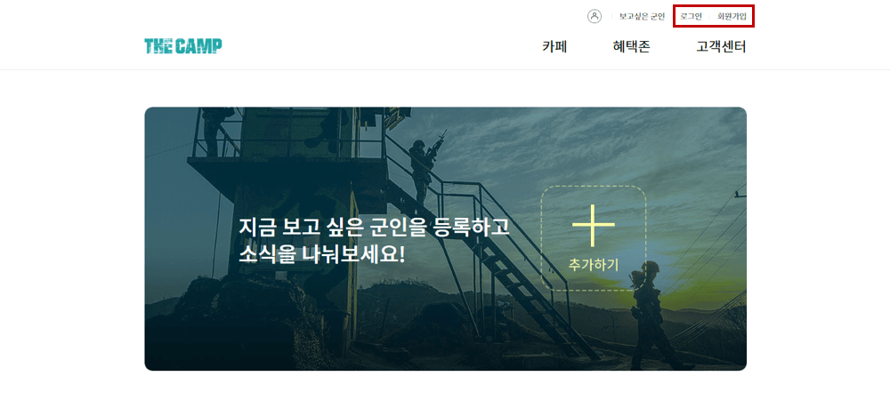

충성! 편지를 써주시려고 이곳에 방문해주신 모든 분들께 감사의 말씀을 드립니다. 이 사이트는 편지를 쓸 수 있는 곳은 아니며 제가 편지를 쓰는 방법에 대해 설명해 놓은 곳임을 말씀드립니다. 먼저 유의사항에 대해 말씀드리며, 그 후에 방법을 설명드리겠습니다.
*유의 사항
- 훈련병 추가하기 및 편지쓰기는 연명부가 추가되는 입영 다음주 화요일~수요일(3월 31일~4월 1일)부터 가능합니다.
- 답장을 받고 싶은 분께서는 꼭 편지에 답장을 받을 주소와 우편번호(5자리)를 적어주세요.
그럼 이제 시작합니다 😉
1. 사이트 접속 및 로그인
더 캠프 PC버전 사이트 www.thecamp.or.kr 에 접속해주세요. 그리고 회원가입 후 로그인해주세요.

- 제가 시도했을 당시 PC버전에서는 카카오톡 및 페이스북 회원가입에 오류가 있었습니다. 이메일로 가입하시는 것을 추천드립니다.
- 이미 더캠프 회원가입을 진행한 카카오톡, 페이스북 아이디의 경우 로그인은 되었습니다.
2. 보고 싶은 군인 등록
메인 화면에서 보이는 추가하기 버튼을 클릭하여 훈련병을 등록할 수 있습니다. 이제 제 정보를 입력해야 하는데요, 저의 인적 사항은 다음과 같습니다. 인적 사항을 입력하신 후에 관계를 선택해주시고 저를 등록해주세요. 메인 화면에 제 정보가 등록된 것을 볼 수 있습니다. 카페 확인을 눌러 카페가 개설 되었는지 확인해주세요.
*인적 사항
- 성분 : 훈련병
- 군종 : 육군
- 이름 : 강호찬
- 생년월일 : 1999. 02. 17.
- 입영일 : 2020. 03. 23.
- 입영부대 : 육군훈련소
3. 카페 가입
상단의 메뉴바에서 "카페" - "위문 편지" 메뉴를 클릭해주세요. 그리고 "보고 싶은 군인으로 바로가기" 버튼을 클릭해주세요. 추천 카페에 제가 올라온 것을 볼 수 있습니다. 가입 버튼을 눌러주시면 카페에 가입되고 내 카페에 추가됩니다. (*3월 31일~4월 1일 이후에 카페가 개설되므로 그 전에는 가입할 수 없습니다.)
- 만약 3월 31일~4월 1일 이후에도 카페 오픈전이라는 문구가 뜬다면, 메인 화면으로 돌아가셔서 제 정보에 "카페 확인" 버튼을 클릭해주세요. 카페가 개설되었다는 메시지를 보신 후, 다시 3번 단계를 진행하시면 가입 버튼이 있는 것을 볼 수 있습니다.
- 여전히 카페가 개설되지 않았다면 제 군인 정보를 삭제하고 설명드린 방법으로 재등록한 뒤 다시 확인해봐주세요. 삭제는 사이트 최상단의 "보고싶은 군인"을 클릭하시면 진행하실 수 있습니다.
4. 위문 편지 쓰기
내 카페에 제가 정상적으로 추가되었다면, 위문 편지 버튼을 확인할 수 있습니다. 이 버튼을 클릭하여 위문 편지를 작성해주세요! 감사합니다!
*편지에는...
- 작성하시는 날짜를 함께 써주세요.
- 자신이 누구인지 꼭 적어주세요. 써주지 않으시면 알 방법이 없습니다ㅠㅠ
- 저를 생각하시면서😊 자유롭게 내용을 작성해주시되, 어떻게 지내시는지, 그리고 흥미로운 세상 소식(뉴스) 등을 적어주시면 좋을 것 같아요.
- 또, 기도 제목을 적어주신다면 함께 기도할게요!
- 그리고 주간의 날씨를 간략히 적어주신다면 훈련에 앞서 마음 준비하기에 좋을 것 같습니다😌
- 마지막으로, 답장을 원하시는 분은 꼭 주소와 5자리 우편번호를 적어주세요! → [ 우편번호찾기(클릭) ]
5. 그리고... 저를 위해 기도해주시겠어요?
저의 기도 제목을 적어보았습니다. 기도로 함께해 주시면 감사드리겠습니다. (파란색으로 표시된 기도 제목 글자를 클릭하면 볼 수 있습니다.)